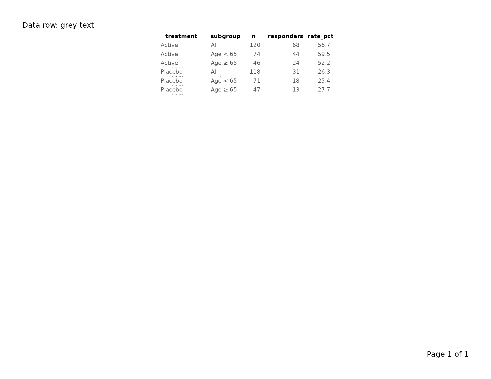
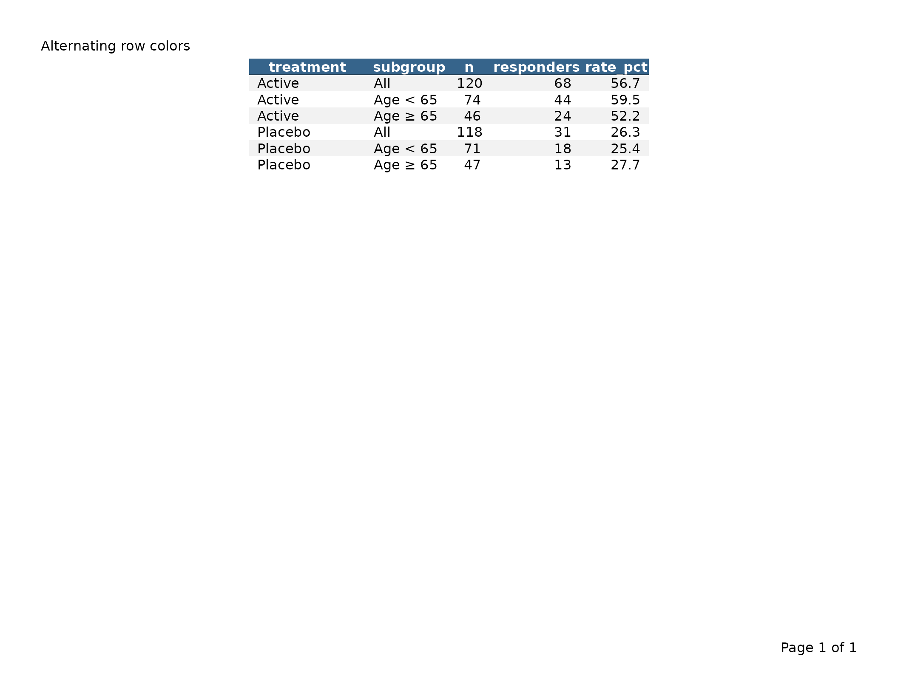
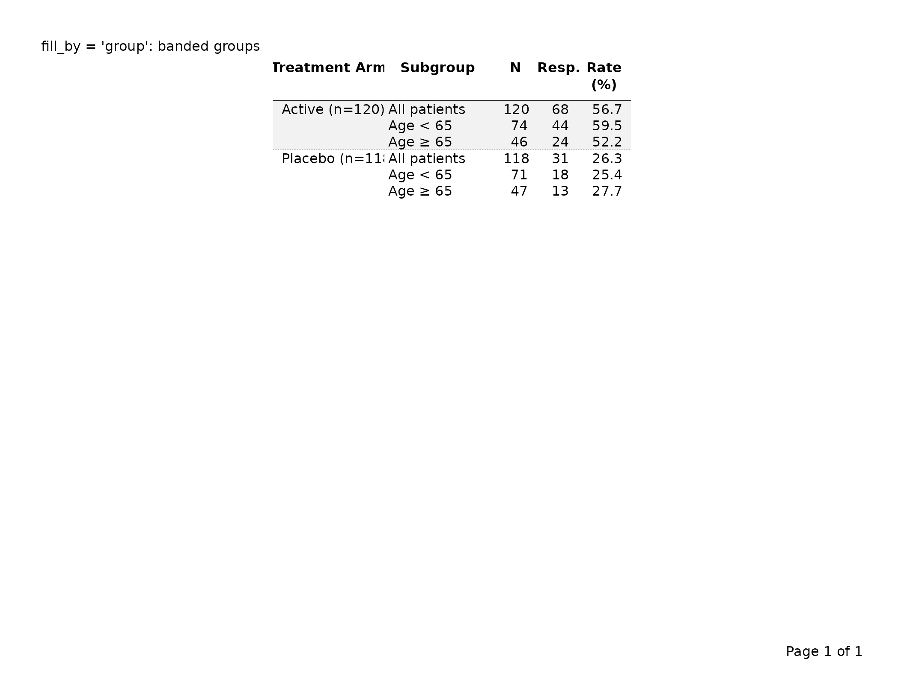

Styling Tables with tfl_table
v03-tfl_table_styling.Rmd
library(writetfl)
library(dplyr) # for group_by()
#>
#> Attaching package: 'dplyr'
#> The following objects are masked from 'package:stats':
#>
#> filter, lag
#> The following objects are masked from 'package:base':
#>
#> intersect, setdiff, setequal, union
# Clinical data and column spec used throughout this vignette.
# treatment is the first column so it can serve as the group column.
clinical <- data.frame(
treatment = c(rep("Active (n=120)", 3), rep("Placebo (n=118)", 3)),
subgroup = c("All patients", "Age < 65", "Age \u2265 65",
"All patients", "Age < 65", "Age \u2265 65"),
n = c(120L, 74L, 46L, 118L, 71L, 47L),
responders = c( 68L, 44L, 24L, 31L, 18L, 13L),
rate_pct = c(56.7, 59.5, 52.2, 26.3, 25.4, 27.7),
stringsAsFactors = FALSE
)
col_spec <- list(
tfl_colspec("treatment", label = "Treatment Arm", width = unit(1.3, "inches")),
tfl_colspec("subgroup", label = "Subgroup", width = unit(1.4, "inches")),
tfl_colspec("n", label = "N", width = unit(0.4, "inches")),
tfl_colspec("responders", label = "Resp.", width = unit(0.5, "inches")),
tfl_colspec("rate_pct", label = "Rate (%)", width = unit(0.65, "inches"))
)1. Overview
tfl_table() accepts a gp argument that is a
named list of gpar() objects. Each key
targets a specific visual element of the rendered table. Keys that are
not supplied fall back to sensible clinical defaults; you only need to
specify the elements you want to change.
The full set of recognized keys is:
| Key | Targets | Default |
|---|---|---|
gp$table |
Base font for all table text | gpar(fontsize = 9, fontfamily = "sans") |
gp$header_row |
Column header row text; fill sets background color |
gpar(fontface = "bold") (inherits
gp$table) |
gp$data_row |
Data cell text; fill sets background (vector
alternates) |
inherits gp$table
|
gp$group_col |
Row-header column text | inherits gp$table
|
gp$continued |
Continuation marker text |
gpar(fontface = "italic") (inherits
gp$table) |
gp$col_header_rule |
Rule drawn under column header row | gpar(lwd = 1) |
gp$group_rule |
Rules drawn between groups | gpar(lwd = 0.5, lty = "dotted") |
gp$row_rule |
Rules drawn between data rows | gpar(lwd = 0.5) |
gp$row_header_sep |
Vertical rule after row-header columns | gpar(lwd = 0.5) |
Inheritance is cascading: gp$data_row starts from
gp$table, so setting
gp$table = gpar(fontsize = 8) automatically shrinks data
cells unless you explicitly override gp$data_row.
Page-level typography — the text in the page header, caption,
footnote, and footer zones — is controlled by the gp
argument of export_tfl_page() / export_tfl(),
not by tfl_table()’s gp.
2. Base font — gp$table
gp$table is the typographic root for the whole table.
Every other gp key inherits from it unless overridden.
tbl <- tfl_table(
clinical,
gp = list(
table = gpar(fontsize = 8, fontfamily = "serif")
)
)
export_tfl(tbl, preview = TRUE, header_left = "Base font: serif 8pt")Changing gp$table propagates to all rows and rules
unless you selectively override a more specific key.
3. Column header row style — gp$header_row and
show_col_names
The column header row renders the column names (or labels supplied
via tfl_colspec()). By default headers are
bold at the base font size.
# Custom header: slightly larger, italic instead of bold
tbl <- tfl_table(
clinical,
gp = list(
table = gpar(fontsize = 9),
header_row = gpar(fontface = "italic", fontsize = 10)
)
)
export_tfl(tbl, preview = TRUE, header_left = "Header row: italic 10pt")Set show_col_names = FALSE to suppress the header row
entirely — useful when you are stacking multiple tfl_table
objects on one page and only the first needs column labels.
tbl_no_header <- tfl_table(
clinical,
show_col_names = FALSE
)
export_tfl(tbl_no_header, preview = TRUE,
header_left = "show_col_names = FALSE")4. Data row style — gp$data_row
gp$data_row controls the appearance of every non-header,
non-group-column cell. It inherits gp$table
automatically.
tbl <- tfl_table(
clinical,
gp = list(
table = gpar(fontsize = 9),
data_row = gpar(col = "grey30")
)
)
export_tfl(tbl, preview = TRUE, header_left = "Data row: grey text")
5. Group column style — gp$group_col and per-column
override
Row-header (group) columns — those designated via
dplyr::group_by() — receive their own style key,
gp$group_col, which also inherits
gp$table.
# Bold group column to distinguish it from data columns
tbl <- clinical |>
group_by(treatment) |>
tfl_table(
cols = list(
tfl_colspec("treatment", label = "Treatment Arm", width = unit(1.3, "inches")),
tfl_colspec("subgroup", label = "Subgroup", width = unit(1.4, "inches")),
tfl_colspec("n", label = "N", width = unit(0.4, "inches")),
tfl_colspec("rate_pct", label = "Rate (%)", width = unit(0.65, "inches"))
),
gp = list(
group_col = gpar(fontface = "bold")
)
)
export_tfl(tbl, preview = TRUE, header_left = "Group column: bold")To override a single group column without touching
the others, pass gp directly to
tfl_colspec():
# The treatment group column gets bold via its tfl_colspec gp;
# any other group columns would stay at the gp$group_col default
tbl <- clinical |>
group_by(treatment) |>
tfl_table(
cols = list(
tfl_colspec("treatment", label = "Treatment Arm", width = unit(1.3, "inches"),
gp = gpar(fontface = "bold")),
tfl_colspec("subgroup", label = "Subgroup", width = unit(1.4, "inches")),
tfl_colspec("n", label = "N", width = unit(0.4, "inches")),
tfl_colspec("rate_pct", label = "Rate (%)", width = unit(0.65, "inches"))
)
)
export_tfl(tbl, preview = TRUE,
header_left = "Per-colspec gp overrides group_col gp")The gp on tfl_colspec() takes precedence
over gp$group_col for that specific column; all other group
columns still inherit gp$group_col.
6. Continuation marker style — gp$continued and
row_cont_msg
When a table spans multiple pages, tfl_table() injects a
continuation marker at the bottom of each non-final page. By default the
marker text is "(continued)" and is rendered in italic.
# Smaller continuation marker, explicit message
tbl <- tfl_table(
clinical,
row_cont_msg = "(table continues on next page)",
gp = list(
continued = gpar(fontface = "italic", fontsize = 7, col = "grey50")
)
)row_cont_msg replaces the default
"(continued)" string. gp$continued controls
the visual rendering of whatever text row_cont_msg
provides. The continuation marker only appears on tables with more rows
than fit on one page; see vignette("v02-tfl_table_intro")
for an example.
7. Horizontal rules — col_header_rule,
group_rule, group_rule_after_last
Three boolean arguments switch rules on or off; their corresponding
gp keys control line appearance.
Column header rule
A horizontal rule drawn immediately below the column header row.
# Thicker header rule
tbl <- tfl_table(
clinical,
col_header_rule = TRUE,
gp = list(
col_header_rule = gpar(lwd = 1.5)
)
)
export_tfl(tbl, preview = TRUE, header_left = "Header rule: lwd = 1.5")
# No header rule at all
tbl_no_rule <- tfl_table(
clinical,
col_header_rule = FALSE
)
export_tfl(tbl_no_rule, preview = TRUE,
header_left = "col_header_rule = FALSE")Between-group rules
A rule drawn after each group of rows (defined by changes in the
first group column). group_rule_after_last controls whether
a rule also appears after the final group.
# Solid thin rules between groups, including after the last one
tbl <- clinical |>
group_by(treatment) |>
tfl_table(
cols = col_spec,
group_rule = TRUE,
group_rule_after_last = TRUE,
gp = list(
group_rule = gpar(lwd = 0.5, lty = "solid")
)
)
export_tfl(tbl, preview = TRUE,
header_left = "Group rules: solid, including after last")
# No between-group rules
tbl_no_grp <- clinical |>
group_by(treatment) |>
tfl_table(
cols = col_spec,
group_rule = FALSE
)
export_tfl(tbl_no_grp, preview = TRUE,
header_left = "group_rule = FALSE")The default gp$group_rule is
gpar(lwd = 0.5, lty = "dotted"). Any valid lty
value accepted by grid (e.g. "dashed",
"solid", "dotted") works here.
8. Data row rules — row_rule and
gp$row_rule
A horizontal rule drawn between every pair of consecutive data rows.
Enabled with row_rule = TRUE. Unlike
group_rule (which only appears at group boundaries),
row_rule draws a line after every row except the last.
tbl <- tfl_table(
clinical,
row_rule = TRUE,
gp = list(
row_rule = gpar(lwd = 0.3, col = "grey70")
)
)
export_tfl(tbl, preview = TRUE,
header_left = "row_rule = TRUE: lines between rows")The default gp$row_rule is gpar(lwd = 0.5).
Set row_rule = FALSE (the default) to suppress inter-row
rules entirely.
9. Cell background shading — gp$fill and
fill_by
Background colors for the header row and data rows are controlled
through the fill field in existing gp keys.
Header row background
tbl <- tfl_table(
clinical,
gp = list(
header_row = gpar(fontface = "bold", fill = "lightblue")
)
)
export_tfl(tbl, preview = TRUE,
header_left = "Header row with fill = 'lightblue'")Alternating row colors (zebra striping)
Pass a vector of colors to gp$data_row$fill to alternate
between them:
tbl <- tfl_table(
clinical,
gp = list(
header_row = gpar(fontface = "bold", fill = "steelblue4", col = "white"),
data_row = gpar(fill = c("grey95", "white"))
)
)
export_tfl(tbl, preview = TRUE,
header_left = "Alternating row colors")
Alternating by group — fill_by = "group"
By default, fill_by = "row" cycles through the color
vector for each data row. Setting fill_by = "group"
advances the color index only at group boundaries, so all rows in the
same group share one background color.
tbl <- clinical |>
group_by(treatment) |>
tfl_table(
cols = col_spec,
fill_by = "group",
gp = list(
data_row = gpar(fill = c("grey95", "white"))
)
)
export_tfl(tbl, preview = TRUE,
header_left = "fill_by = 'group': banded groups")
10. Vertical row-header separator — row_header_sep and
gp$row_header_sep
A vertical rule drawn to the right of the last row-header (group)
column, separating the row labels from the data columns. Enabled with
row_header_sep = TRUE.
# Thin solid vertical separator after the group column
tbl <- clinical |>
group_by(treatment) |>
tfl_table(
cols = list(
tfl_colspec("treatment", label = "Treatment Arm", width = unit(1.3, "inches")),
tfl_colspec("subgroup", label = "Subgroup", width = unit(1.4, "inches")),
tfl_colspec("n", label = "N", width = unit(0.4, "inches")),
tfl_colspec("rate_pct", label = "Rate (%)", width = unit(0.65, "inches"))
),
row_header_sep = TRUE,
gp = list(
row_header_sep = gpar(lwd = 0.75, col = "grey40")
)
)
export_tfl(tbl, preview = TRUE,
header_left = "Row header separator")
# Suppress the separator (default)
tbl_no_sep <- clinical |>
group_by(treatment) |>
tfl_table(
cols = col_spec,
row_header_sep = FALSE
)
export_tfl(tbl_no_sep, preview = TRUE,
header_left = "row_header_sep = FALSE (default)")11. Cell padding — cell_padding
cell_padding is a grid::unit object that
controls the whitespace between cell content and cell boundaries. It
accepts two forms:
Scalar — the same padding is applied on all four sides:
tbl <- tfl_table(
clinical,
cell_padding = unit(0.15, "lines")
)
export_tfl(tbl, preview = TRUE, header_left = "Uniform padding: 0.15 lines")Two-element vector — separate vertical and horizontal padding. Use this when you want tighter horizontal spacing but more vertical breathing room:
tbl <- tfl_table(
clinical,
cell_padding = unit(c(0.3, 0.1), "lines") # [1] = vertical, [2] = horizontal
)
export_tfl(tbl, preview = TRUE,
header_left = "Asymmetric padding: 0.3v / 0.1h lines")The first element controls top and bottom padding; the second controls left and right. Reducing horizontal padding allows more columns to fit on a page without reducing font size.
12. Column continuation message — col_cont_msg
When the table has more columns than fit on one page,
tfl_table() splits across multiple column-pages.
col_cont_msg is a character string displayed as rotated
side labels:
- Clockwise 90° (reading downward) to the right of the table on pages where columns continue on a subsequent page.
- Counter-clockwise 90° (reading upward) to the left of the full table (including row-label columns) on pages where columns continue from a prior page.
One line-height of spacing separates the table edge from the text.
Set col_cont_msg = NULL to suppress the labels
entirely.
# Default message
tbl <- tfl_table(
clinical,
col_cont_msg = "Columns continue on next page"
)
# Suppress
tbl_no_msg <- tfl_table(
clinical,
col_cont_msg = NULL
)13. Complete example: clinical default vs. publication style
The following pair of examples contrasts the out-of-the-box clinical
appearance with a more compact publication-style variant. Both render
using preview = TRUE.
Default clinical look
tbl_clinical <- clinical |>
group_by(treatment) |>
tfl_table(
cols = col_spec,
col_header_rule = TRUE,
group_rule = TRUE,
group_rule_after_last = FALSE,
row_header_sep = TRUE,
cell_padding = unit(0.2, "lines")
# gp uses built-in defaults: bold headers, dotted group rules, etc.
)
export_tfl(
tbl_clinical,
preview = TRUE,
pg_width = 11,
pg_height = 8.5,
header_left = "Study XYZ-001",
header_right = "CONFIDENTIAL",
caption = "Table 1. Response rates by treatment arm and age subgroup.",
footnote = "Abbreviations: Resp. = responders; Rate = response rate.",
footer_left = "Program: t_resp.R",
margins = unit(c(t = 0.75, r = 0.75, b = 0.75, l = 0.75), "inches")
)Publication style
tbl_publication <- clinical |>
group_by(treatment) |>
tfl_table(
cols = col_spec,
col_header_rule = TRUE,
group_rule = FALSE, # no between-group rules
group_rule_after_last = FALSE,
row_header_sep = FALSE, # no vertical separator
cell_padding = unit(c(0.25, 0.08), "lines"),
gp = list(
# smaller, serif base font
table = gpar(fontsize = 8, fontfamily = "serif"),
# plain (not bold) column headers, slightly larger
header_row = gpar(fontface = "plain", fontsize = 9, fontfamily = "serif"),
# italicized group column
group_col = gpar(fontface = "italic"),
# heavier header rule
col_header_rule = gpar(lwd = 1.5),
# smaller, lighter continuation marker
continued = gpar(fontface = "italic", fontsize = 7, col = "grey60")
)
)
export_tfl(
tbl_publication,
preview = TRUE,
pg_width = 8.5,
pg_height = 11,
caption = "Table 1. Response rates by treatment arm and age subgroup.",
footnote = "Resp. = responders; Rate (%) = response rate.",
margins = unit(c(t = 1, r = 1, b = 1, l = 1), "inches")
)The two outputs differ visibly in:
- Font family and weight (sans-serif bold headers vs. serif plain headers)
- Presence of group rules and the vertical row-header separator
- Cell padding (uniform vs. asymmetric v/h form)
- Header rule weight
- Continuation marker appearance